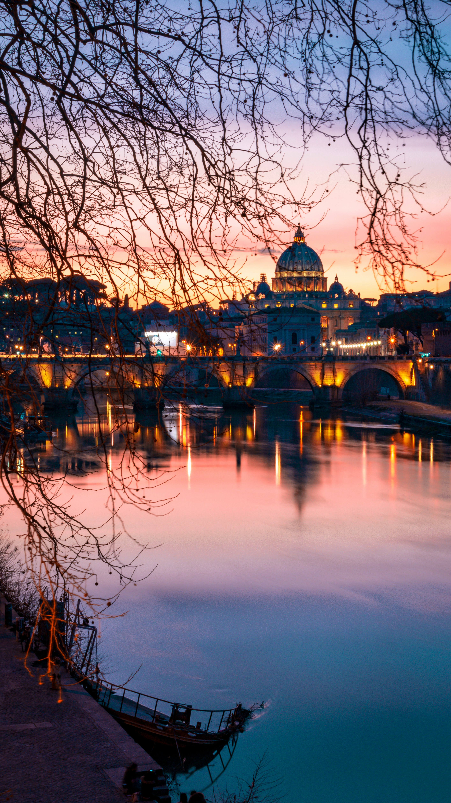
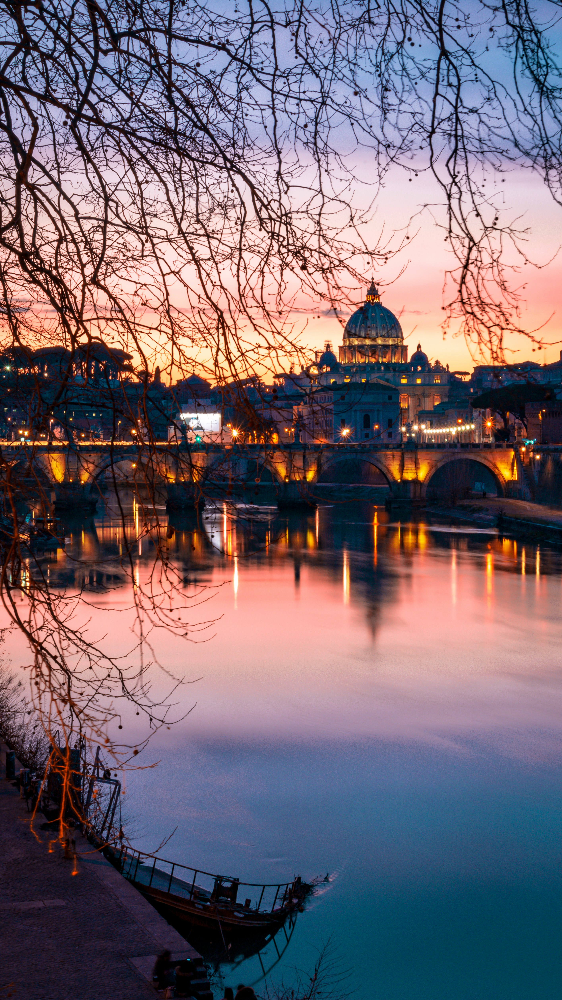
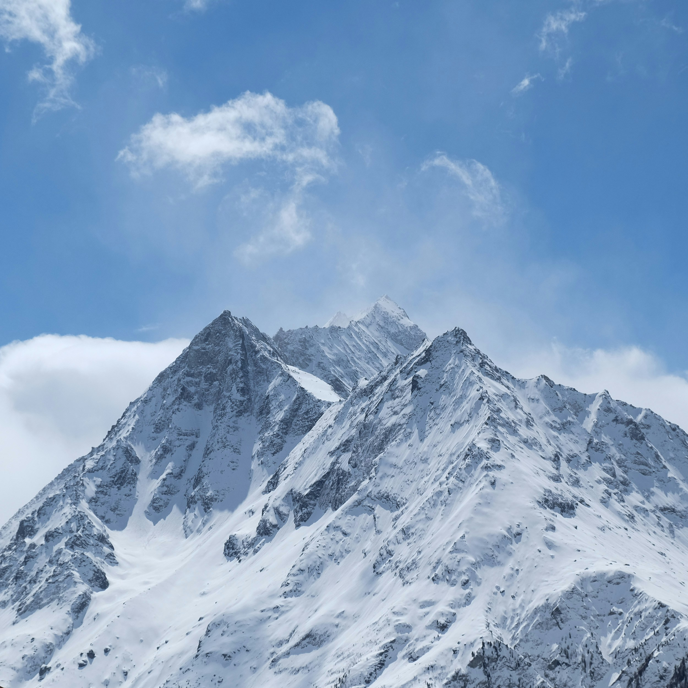
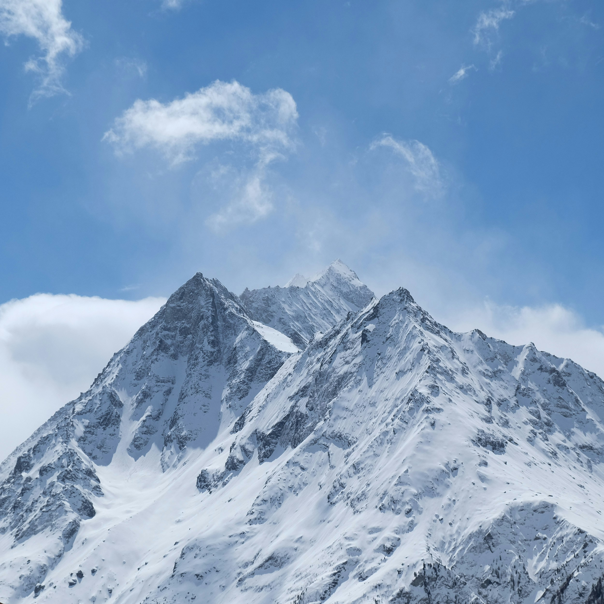
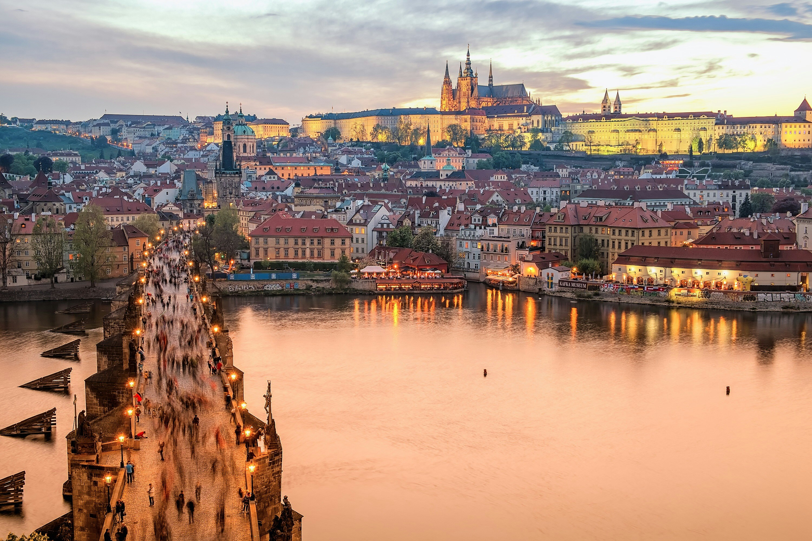
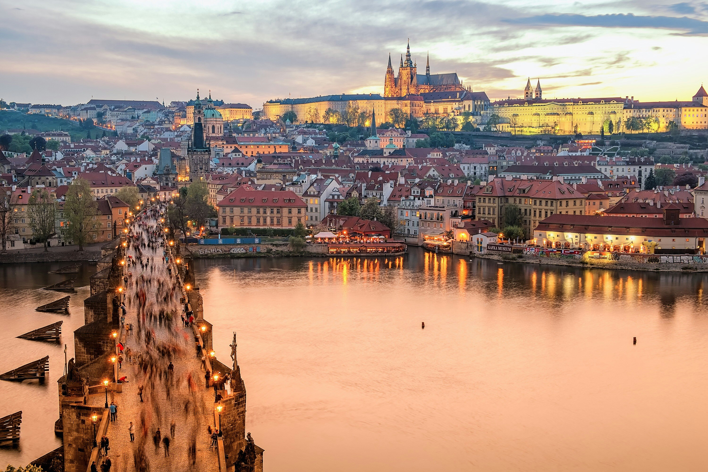

Geography & Landscape
The United Arab Emirates (UAE) is located on the Arabian Peninsula, bordered by Saudi Arabia to the south and west, Oman to the east, and the Persian Gulf to the north. The country is characterized by vast deserts, coastal plains, and mountainous regions. The Rub' al Khali, or Empty Quarter, is one of the largest sand deserts in the world, while the eastern regions feature the rugged Hajar Mountains.
Culture & Traditions
The UAE is a blend of traditional Islamic culture and modern cosmopolitanism. While deeply rooted in its Bedouin heritage, the country is also home to a diverse expatriate population. Traditional practices like falconry, camel racing, and dhow sailing are still celebrated, alongside modern art, music, and fashion scenes.
Cuisine
Emirati cuisine is a rich blend of Middle Eastern and Asian influences. Popular dishes include Al Harees (a slow-cooked wheat and meat dish), Shawarma, and Majboos (a spiced rice dish with meat). Dates and Arabic coffee are traditional staples, often served as a sign of hospitality.
Tourist Attractions & Landmarks
The UAE is known for its iconic landmarks, such as the Burj Khalifa in Dubai, the tallest building in the world, and the Sheikh Zayed Grand Mosque in Abu Dhabi, a masterpiece of modern Islamic architecture. Other popular attractions include the Palm Jumeirah, Dubai Mall, and the desert safari experiences that showcase the country's natural beauty.
Language
Arabic is the official language of the UAE, with Emirati Arabic being the local dialect. However, English is widely spoken and serves as the lingua franca, especially in business and tourism. Due to the expatriate population, other languages like Hindi, Urdu, and Tagalog are also commonly heard.
Festivals & Celebrations
The UAE celebrates a range of cultural and religious festivals, including Eid al-Fitr and Eid al-Adha, which are marked by communal prayers, feasts, and charity. National Day on December 2nd celebrates the unification of the seven emirates, featuring fireworks, parades, and cultural performances.
Climate
The UAE has a desert climate, with extremely hot summers and mild winters. Summer temperatures can exceed 113°F (45°C), while winter temperatures range between 57°F to 75°F (14°C to 24°C). The country experiences minimal rainfall, mostly during the cooler months, and occasional sandstorms.


 



 



 
